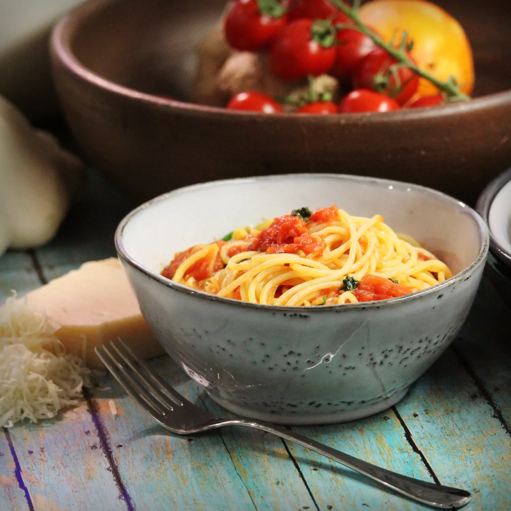

Pasta with Fresh Tomato Sauce

Description
This pasta dish with a fresh tomato sauce and fragrant basil is wonderful served with a green salad.
Ingredients
- 1 (16 ounce) package dry penne pasta
- 8 Roma (plum) tomatoes, diced
- ½ cup Italian dressing, or to taste
- ¼ cup finely chopped fresh basil
- ¼ cup diced red onion
- ¼ cup grated Parmesan cheese
Steps
- Add penne to lightly salted water and boil for 8-10 minutes
- Drain pasta and transfer to large bowl
- Add tomatoes, Italian dressing, basil, red onion, and Parmesan cheese; toss until well coated.